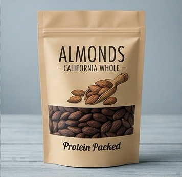
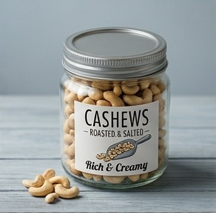
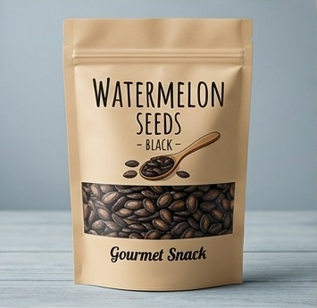

Nuts & Seeds

Crunchy, nutrient-dense almonds packed with plant protein, healthy fats, and Vitamin E. Ideal for daily snacking, baking, or blending into creamy almond milk.

Creamy, buttery whole cashews rich in heart-healthy fats, magnesium, and iron. Great for daily snacking, cooking, or blending into rich dairy-free sauces.

Crisp, earthy walnut halves loaded with plant-based Omega-3s and antioxidants for brain and heart health. Ideal for baking, salads, or morning oats.

Crunchy, mineral-rich green pepitas packed with plant protein, zinc, and magnesium. Perfect for roasting, sprinkling over salads, or snacking on the go.

Tiny, nutrient-dense superfood seeds packed with soluble fiber, Omega-3s, and protein. Absorbs liquid to create creamy puddings, thick smoothies, or egg substitutes.

Golden-brown, nutty seeds loaded with Omega-3 fatty acids, lignans, and dietary fiber. Best ground into smoothies, yogurt, or baked goods for optimal digestion.

Soft, mildly nutty hemp hearts offering complete plant protein and an ideal balance of Omega-3 and Omega-6 fats. Ready to sprinkle direclty over bowls, salads and toast.

Mild, nutty kernels high in Vitamin E, selenium, and healthy fats. A versatile crunch for trail mixes, breads, salads, and everyday snacking.

Light, crisp roasted or raw kernels rich in protein, iron, and B vitamins. A traditional, nutrient-dense crunch for snacking, granolas, and savory dishes.